홈페이지, 블로그, SNS, 문의까지 이어지는 경험의 순서를 정리합니다.
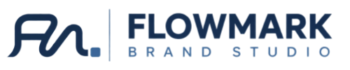
상담문의
BRAND DIRECTION · DESIGN · DIGITAL
브랜드의 강점을 선명하게
선택의 이유를 분명하게.
업종과 서비스의 본질을 읽고, 고객이 바로 이해할 수 있는
브랜드·홈페이지·콘텐츠 흐름을 설계합니다.
01
Direction
02Design
03Digital
BRANDINGHOMEPAGEMARKETINGDESIGNBLOGCONTENTSDIRECTIONDIGITALBRANDINGHOMEPAGEMARKETINGDESIGNBLOGCONTENTSDIRECTIONDIGITALBRANDINGHOMEPAGEMARKETINGDESIGNBLOGCONTENTSDIRECTIONDIGITALBRANDINGHOMEPAGEMARKETINGDESIGNBLOGCONTENTSDIRECTIONDIGITAL
01 ABOUT FLOWMARK
BRAND STUDIO FOR SMALL BUSINESS흐름을 읽고,
선택의 지점을 표시합니다.
FLOWMARK는 브랜드가 가진 강점이 고객의 선택까지 이어지도록, 흐름을 설계하고 기억될 지점을 선명하게 남기는 브랜드 스튜디오입니다.
강점, 메시지, 비주얼 포인트를 고객이 알아보는 언어로 남깁니다.
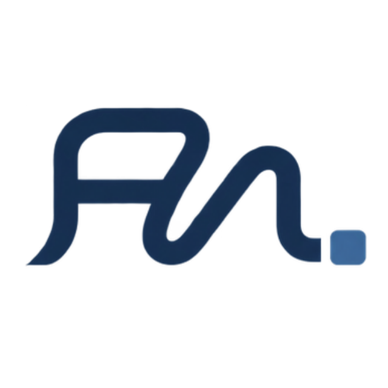
02 WHY BRANDING
좋은 서비스도,
보여주는 방식에 따라
선택은 달라집니다.
브랜딩은 없는 것을 꾸며내는 일이 아니라,
이미 가진 경쟁력을 고객이 알아보게 만드는 일입니다.
처음 구축하는 브랜드
- 무엇부터 만들어야 할지 모르는 상태
- 강조할 내용과 정보 우선순위가 없는 상태
- 로고·색상·문구가 각각 만들어지는 상태
운영 중 다시 정리할 브랜드
- 홈페이지·블로그·SNS 이미지가 다른 상태
- 서비스의 장점이 첫 화면에서 보이지 않는 상태
- 자료는 많지만 하나로 연결되지 않는 상태
03 WHAT WE CHECK
디자인에 앞서,
무엇을 어떻게 보여줄지 정리합니다.
예쁜 화면보다 먼저 확인해야 할 여섯 가지.
이 기준이 결과물의 방향과 우선순위를 만듭니다.
현재 브랜드와 사업의 상태
판매하는 상품과 서비스
경쟁 브랜드와 구분되는 강점
실제로 선택할 고객
홈페이지·블로그·SNS의 역할
문의·예약·구매 등 최종 목적
04 BEFORE & AFTER
같은 서비스,
더 분명한 선택의 이유.
슬라이더를 움직여 브랜드의 변화 전후를 확인해보세요.
장식이 아니라 구조와 메시지, 문의 동선의 변화입니다.
before-brand.co.kr
LOGO 회사소개 서비스 제품소개 문의
고객과 함께 성장하는 기업최고의 서비스로
보답하겠습니다.
보답하겠습니다.
다양한 경험과 노하우를 바탕으로 최선을 다합니다.
renewed-brand.co.kr
ONDOABOUT SERVICE STORY CONTACT
SMALL BRAND, CLEAR VALUE매일의 선택을
더 가볍게.
더 가볍게.
필요한 것만 정직하게 담은 라이프케어 서비스
O
↔
BEFOREAFTER흩어진 정보 → 명확한 구조일반적인 소개 → 분명한 강점제각각인 채널 → 일관된 경험
05 WHAT WE DO
필요한 영역을 연결해,
하나의 브랜드로 완성합니다.
전체 구축부터 필요한 영역의 개선까지,
현재 브랜드의 단계에 맞춰 구성합니다.
Brand Direction
- 브랜드 현황·경쟁 환경 분석
- 핵심 강점과 차별점 정리
- 브랜드 메시지·콘텐츠 방향
- 채널별 역할과 구성 기획
Visual Design
- 로고 및 기본 아이덴티티
- 컬러·서체·그래픽 기준
- 소개서·배너·SNS 디자인
- 브랜드 디자인 가이드
Website
- 홈페이지 구조·콘텐츠 기획
- 반응형 홈페이지 제작
- 서비스·상품 소개 페이지
- 기존 홈페이지 리뉴얼
Content & Blog
- 블로그 구조·카테고리 설계
- 콘텐츠 주제·글쓰기 방향
- 채널별 비주얼 통일
- 운영용 콘텐츠 템플릿
06 SELECTED WORK
업종의 결을 읽고,
화면의 인상으로 만듭니다.
각 업종의 고객과 서비스에 맞춰 설계한 플로우마크 컨셉 프로젝트입니다.
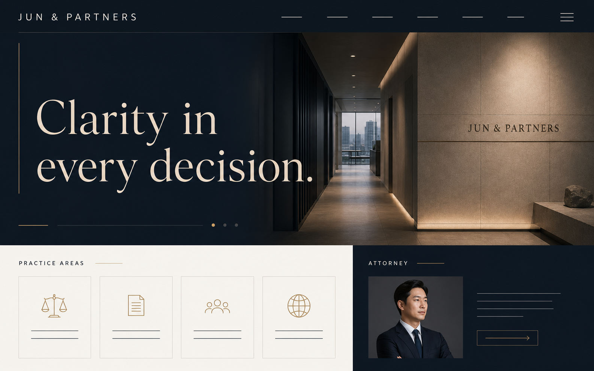
JUN & PARTNERS
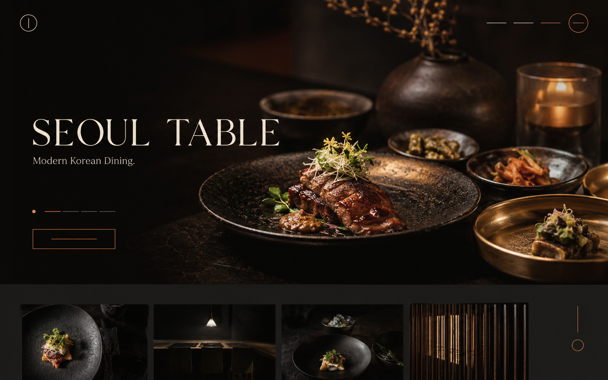
SEOUL TABLE
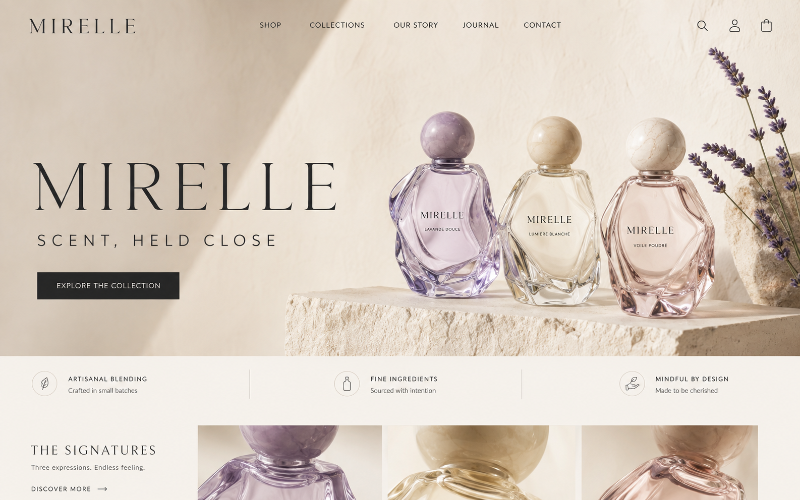
MIRELLE
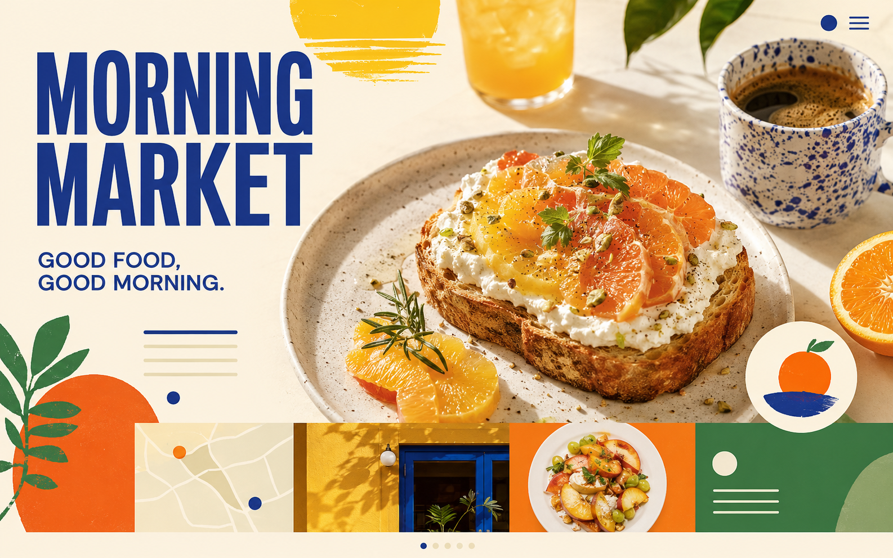
MORNING MARKET
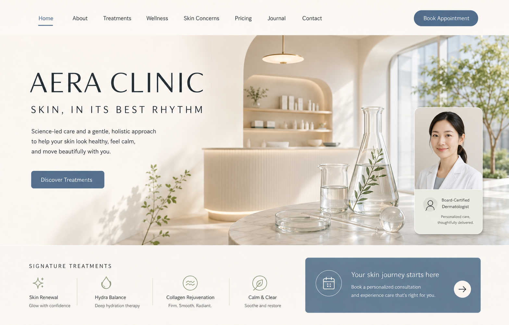
AERA CLINIC
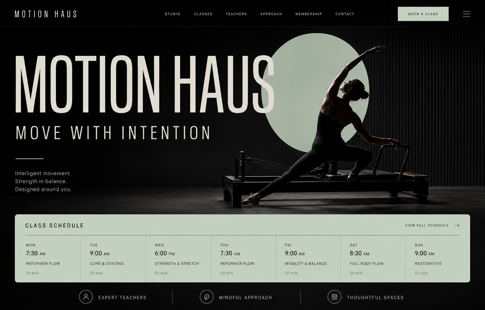
MOTION HAUS
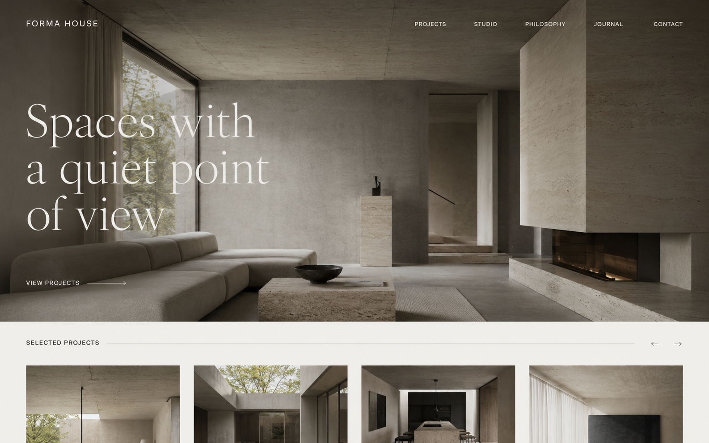
FORMA HOUSE
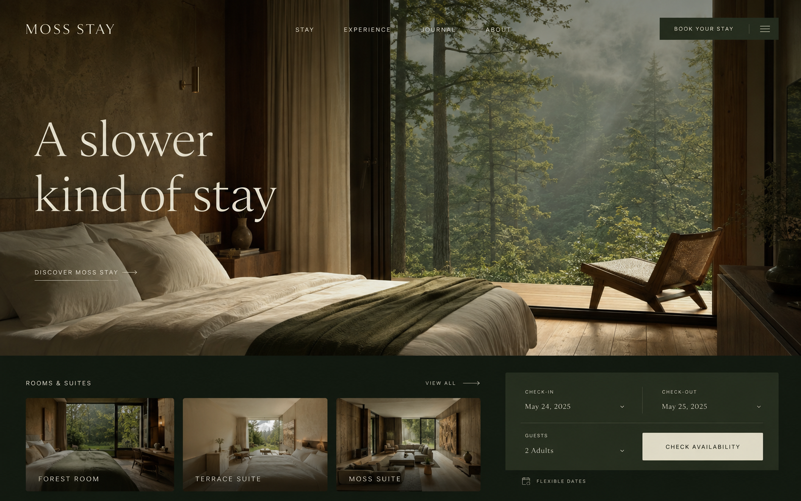
MOSS STAY
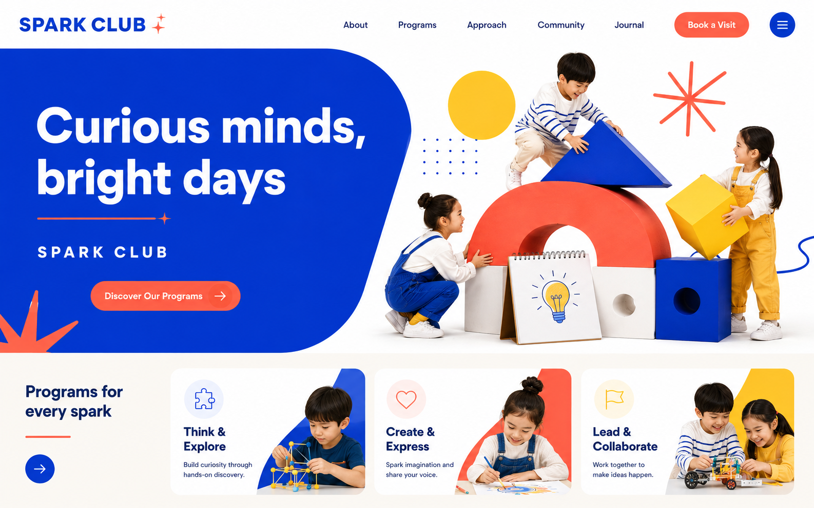
SPARK CLUB

NUAGE BAKERY
CONCEPT PROJECT · 법률사무소 · WEBSITE
JUN & PARTNERS
CONCEPT PROJECT · 한식 다이닝 · WEBSITE
SEOUL TABLE
CONCEPT PROJECT · 니치 퍼퓸 · BRAND SITE
MIRELLE
CONCEPT PROJECT · 브런치 & 로컬푸드 · WEBSITE
MORNING MARKET
CONCEPT PROJECT · 클리닉 · WEBSITE
AERA CLINIC
CONCEPT PROJECT · 감각형 스튜디오 · WEBSITE
MOTION HAUS
CONCEPT PROJECT · 건축·인테리어 · PORTFOLIO
FORMA HOUSE
CONCEPT PROJECT · 부티크 스테이 · WEBSITE
MOSS STAY
CONCEPT PROJECT · 키즈 교육 · WEBSITE
SPARK CLUB
NUAGE BAKERY
07 HOW WE FLOW
확인하고, 정리하고,
실제 결과물로.
문의 이후의 과정과 결과를 명확하게 공유하며
단계별로 함께 완성합니다.
문의 및 현황 파악
현재 단계와 필요한 결과를 확인합니다.
업종·고객·경쟁 분석
보여줘야 할 강점과 차이를 찾습니다.
방향 및 구성 제안
메시지와 채널의 우선순위를 설계합니다.
디자인·콘텐츠 제작
정해진 기준을 실제 화면과 콘텐츠로 만듭니다.
최종 구축 및 전달
운영 가능한 결과물과 기준을 전달합니다.
08 PROJECT INQUIRY
브랜드의 다음 모습을
함께 만들어보세요.
현재 단계와 필요한 결과를 알려주세요.
확인 후 1–2영업일 이내에 답변드립니다.